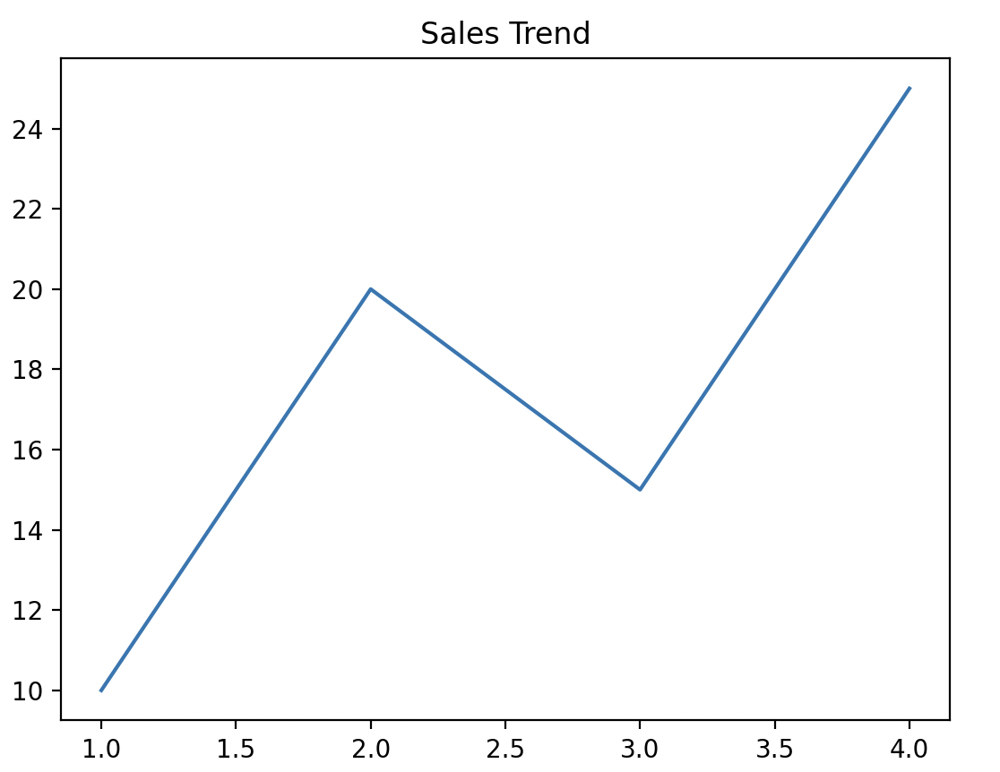
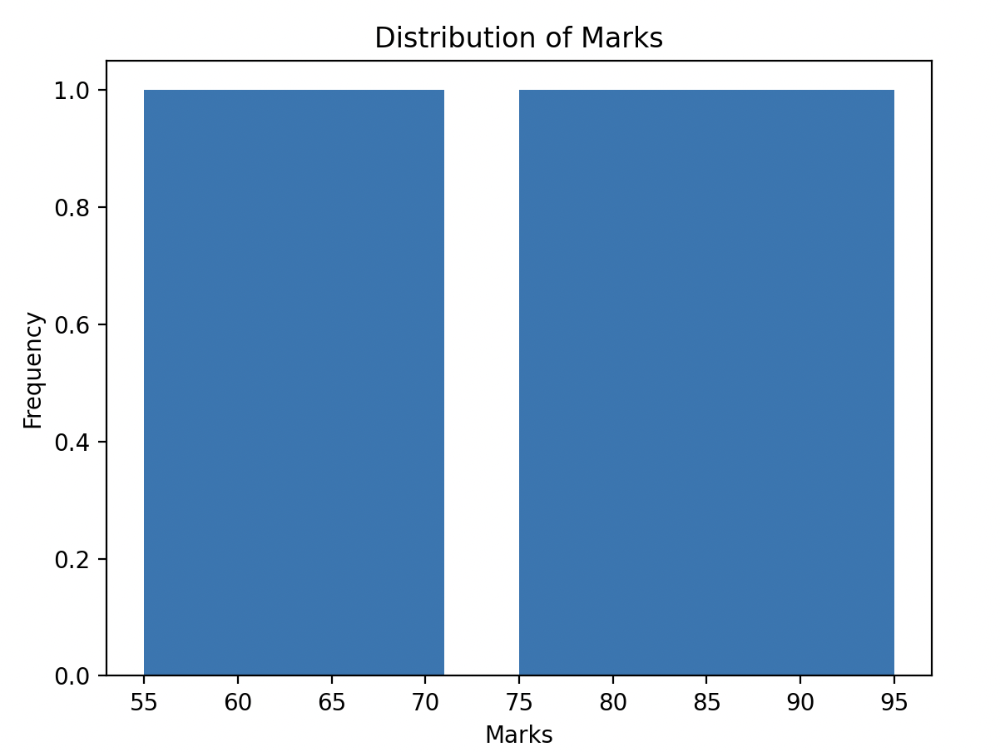
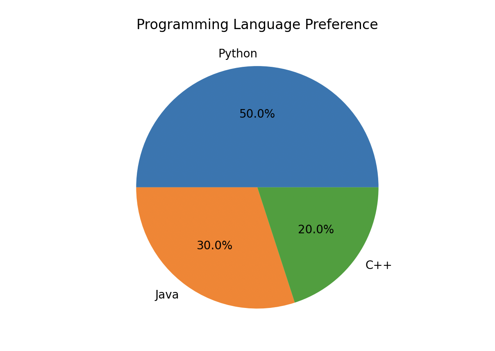
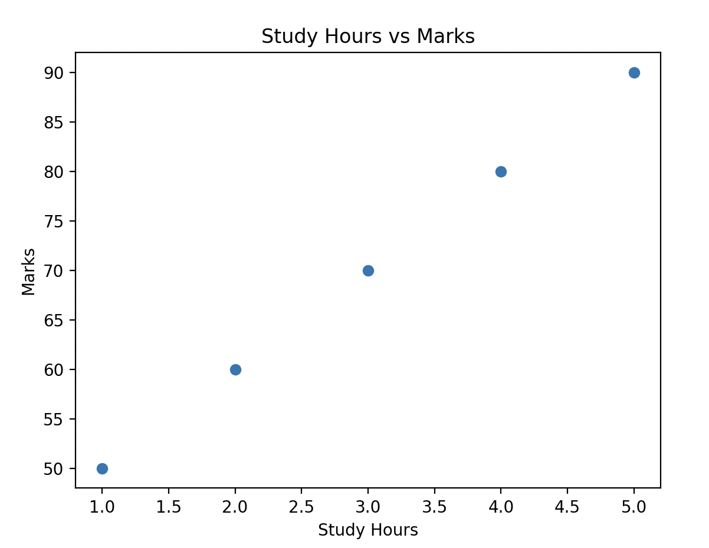

Learn how to create visualizations using Matplotlib including Line Plots, Bar Charts, Histograms, Pie Charts, and Scatter Plots.
Beginner
20 mins
A line plot is used to show trends over time or continuous data.
import matplotlib.pyplot as plt
months = ["Jan", "Feb", "Mar", "Apr", "May"]
sales = [100, 120, 150, 130, 180]
plt.plot(months, sales)
plt.title("Monthly Sales Trend")
plt.xlabel("Month")
plt.ylabel("Sales")
plt.show()

Bar charts compare values across different categories.
import matplotlib.pyplot as plt
subjects = ["Math", "Science", "English"]
marks = [90, 85, 95]
plt.bar(subjects, marks)
plt.title("Student Marks")
plt.xlabel("Subjects")
plt.ylabel("Marks")
plt.show()

Histograms display the frequency distribution of data.
import matplotlib.pyplot as plt
marks = [55,60,65,70,75,80,85,90,95]
plt.hist(marks)
plt.title("Distribution of Marks")
plt.xlabel("Marks")
plt.ylabel("Frequency")
plt.show()

Pie charts show proportions of categories in a dataset.
import matplotlib.pyplot as plt
languages = ["Python","Java","C++"]
students = [50,30,20]
plt.pie(
students,
labels=languages,
autopct="%1.1f%%"
)
plt.title("Programming Language Preference")
plt.show()

Scatter plots help identify relationships between two variables.
import matplotlib.pyplot as plt
hours = [1,2,3,4,5]
marks = [50,60,70,80,90]
plt.scatter(hours, marks)
plt.title("Study Hours vs Marks")
plt.xlabel("Study Hours")
plt.ylabel("Marks")
plt.show()

Data is much easier to understand when presented visually. Matplotlib helps data scientists and analysts identify trends, patterns, and relationships that may not be obvious from raw numbers alone.
| Mistake | Why It Happens | Correct Approach |
|---|---|---|
| Forgetting plt.show() | The graph does not display. | Always call plt.show(). |
| Mismatched X and Y lengths | Different numbers of values. | Keep both arrays the same size. |
| Missing labels | Graphs become difficult to understand. | Add titles and axis labels. |
| Chart Type | Purpose |
|---|---|
| Line Plot | Shows trends over time |
| Bar Chart | Compares categories |
| Histogram | Displays distribution of data |
| Pie Chart | Shows proportions |
| Scatter Plot | Shows relationships between variables |